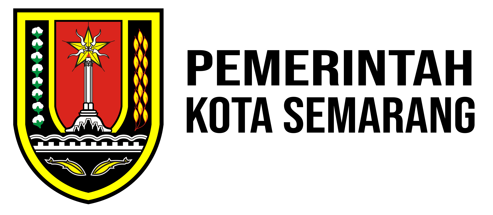

logo_pemkot.png
';" >
logo_diskominfo.png
';" >
BIMBINGAN
TEKNIS
Penyusunan Rekomendasi Kegiatan Statistik
(ROMANTIK)
di Lingkungan Pemerintah Kota Semarang
Semarang, 30 November 2026
Portal Layanan & Dokumen
SURAT UNDANGAN
DAFTAR HADIR
MATERI & PEDOMAN
DOKUMENTASI
Kembali
Judul Dokumen
Buka Penuh
Memuat halaman...